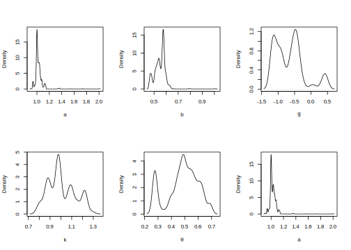

8.1 State-space representation
A state-space model consists of an unobservable state vector \(\boldsymbol{\beta}_t \in \mathbb{R}^K\) and an observed measure \(\boldsymbol{Y}_t \in \mathbb{R}^M\), for \(t=1,2,\dots\). These components satisfy two key properties:
(i) \(\boldsymbol{\beta}_t\) follows a Markov process, meaning that \(\pi(\boldsymbol{\beta}_t\mid \boldsymbol{\beta}_{1:t-1})=\pi(\boldsymbol{\beta}_t\mid \boldsymbol{\beta}_{t-1})\). In other words, all information about \(\boldsymbol{\beta}_t\) is carried by \(\boldsymbol{\beta}_{t-1}\), and
(ii) \(\boldsymbol{Y}_t\) is independent of \(\boldsymbol{Y}_s\) given \(\boldsymbol{\beta}_t\) for all \(s < t\) (Petris, Petrone, and Campagnoli 2009, chap. 2).
These assumptions imply that
\[
\pi(\boldsymbol{\beta}_{0:t},\boldsymbol{Y}_{1:t})=\pi(\boldsymbol{\beta}_0)\prod_{s=1}^{t}\pi(\boldsymbol{\beta}_s\mid \boldsymbol{\beta}_{s-1})\pi(\boldsymbol{Y}_s\mid \boldsymbol{\beta}_s).
\]
A state-space model where the states are discrete random variables is called a hidden Markov model.
There are three key aims in state-space models: filtering, smoothing, and forecasting.
- In filtering, we estimate the current state given observations up to time \(t\), obtaining the density \(\pi(\boldsymbol{\beta}_{s}\mid \boldsymbol{y}_{1:t})\) for \(s = t\).
- In smoothing, we analyze past states, obtaining \(\pi(\boldsymbol{\beta}_{s}\mid \boldsymbol{y}_{1:t})\) for \(s < t\).
- In forecasting, we predict future observations by first computing \(\pi(\boldsymbol{\beta}_{s}\mid \boldsymbol{y}_{1:t})\) as an intermediate step to obtain \(\pi(\boldsymbol{Y}_{s}\mid \boldsymbol{y}_{1:t})\) for \(s > t\).
A key advantage of these methods is that all these densities can be calculated recursively. Petris, Petrone, and Campagnoli (2009) provide the recursive equations in Propositions 2.1 (filtering), 2.3 (smoothing), and 2.5 (forecasting).
8.1.1 Gaussian linear state-space models
An important class of state-space models is the Gaussian linear state-space model, also known as a dynamic linear model:
\[\begin{align} \boldsymbol{Y}_t &= \boldsymbol{X}_t\boldsymbol{\beta}_t+\boldsymbol{\mu}_t & \text{(Observation equations)} \\ \boldsymbol{\beta}_t &= \boldsymbol{G}_t\boldsymbol{\beta}_{t-1}+\boldsymbol{w}_t & \text{(State equations)} \end{align}\]
where \(\boldsymbol{\beta}_0\sim N(\boldsymbol{b}_0,\boldsymbol{B}_0)\), \(\boldsymbol{\mu}_t\sim N(\boldsymbol{0}, \boldsymbol{\Sigma}_t)\), and \(\boldsymbol{w}_t\sim N(\boldsymbol{0}, \boldsymbol{\Omega}_t)\). The terms \(\boldsymbol{\beta}_0\), \(\boldsymbol{\mu}_t\), and \(\boldsymbol{w}_t\) are independent, while \(\boldsymbol{X}_t\) and \(\boldsymbol{G}_t\) are known matrices of dimensions \(M\times K\) and \(K\times K\), respectively.
These assumptions imply that
\[
\boldsymbol{Y}_t\mid \boldsymbol{\beta}_t \sim N(\boldsymbol{X}_t\boldsymbol{\beta}_t, \boldsymbol{\Sigma}_t), \quad
\boldsymbol{\beta}_t\mid \boldsymbol{\beta}_{t-1} \sim N(\boldsymbol{G}_t\boldsymbol{\beta}_{t-1}, \boldsymbol{\Omega}_t).
\]
A general state-space model is defined as \(\boldsymbol{Y}_t = \boldsymbol{f}_t(\boldsymbol{\beta}_t, \boldsymbol{\mu}_t)\) and \(\boldsymbol{\beta}_t = \boldsymbol{m}_t(\boldsymbol{\beta}_{t-1}, \boldsymbol{w}_t)\), where \(\boldsymbol{f}_t\) and \(\boldsymbol{m}_t\) are arbitrary functions with corresponding distributions for \(\boldsymbol{\mu}_t\) and \(\boldsymbol{w}_t\), and a prior for \(\boldsymbol{\beta}_0\).
Let \(\boldsymbol{\beta}_{t-1}\mid \boldsymbol{y}_{1:t-1}\sim N(\boldsymbol{b}_{t-1},\boldsymbol{B}_{t-1})\), then, we can get the Kalman filter by obtaining:
The one-step-ahead predictive distribution of \(\boldsymbol{\beta}_t\) given \(\boldsymbol{y}_{1:t-1}\) is \(\boldsymbol{\beta}_t\mid \boldsymbol{y}_{1:t-1}\sim N(\boldsymbol{a}_t, \boldsymbol{R}_t)\), where \[\boldsymbol{a}_t=\boldsymbol{G}_t\boldsymbol{b}_{t-1}, \quad \boldsymbol{R}_t=\boldsymbol{G}_t\boldsymbol{B}_{t-1}\boldsymbol{G}_t^{\top}+\boldsymbol{\Omega}_t.\]
The one-step-ahead predictive distribution of \(\boldsymbol{Y}_t\) given \(\boldsymbol{y}_{1:t-1}\) is \(\boldsymbol{Y}_t\mid \boldsymbol{y}_{1:t-1}\sim N(\boldsymbol{f}_t, \boldsymbol{Q}_t)\), where \[\boldsymbol{f}_t=\boldsymbol{X}_t\boldsymbol{a}_t, \quad \boldsymbol{Q}_t=\boldsymbol{X}_t\boldsymbol{R}_t\boldsymbol{X}_t^{\top}+\boldsymbol{\Sigma}_t.\]
The distribution of the one-step-ahead prediction error \(\boldsymbol{e}_t=\boldsymbol{Y}_t-\mathbb{E}[\boldsymbol{Y}_t\mid \boldsymbol{y}_{1:t-1}]=\boldsymbol{Y}_t-\boldsymbol{f}_t\) is \(N(\boldsymbol{0}, \boldsymbol{Q}_t)\) (Shumway and Stoffer 2017, chap. 6).
The filtering distribution of \(\boldsymbol{\beta}_t\) given \(\boldsymbol{y}_{1:t}\) is \(\boldsymbol{\beta}_t\mid \boldsymbol{y}_{1:t}\sim N(\boldsymbol{b}_t, \boldsymbol{B}_t)\), where \[\boldsymbol{b}_t=\boldsymbol{a}_t+\boldsymbol{K}_t\boldsymbol{e}_t, \quad \boldsymbol{K}_t=\boldsymbol{R}_t\boldsymbol{X}_t^{\top}\boldsymbol{Q}_t^{-1}\]
is the Kalman gain, and \[\boldsymbol{B}_t=\boldsymbol{R}_t-\boldsymbol{R}_t\boldsymbol{X}_t^{\top}\boldsymbol{Q}_t^{-1}\boldsymbol{X}_t\boldsymbol{R}_t.\]
The formal proofs of these results can be found in Petris, Petrone, and Campagnoli (2009), Chap. 2. Just take into account that the logic of these results follows the Seemingly Unrelated Regression (SUR) model in 7.2 for a particular time period. In addition, we know that the posterior distribution using information up to \(t-1\) becomes the prior in \(t\),
\[\pi(\boldsymbol{\theta}\mid \mathbf{y}_{1:t})\propto p(y_{t}\mid \boldsymbol{y}_{1:t-1},\boldsymbol{\theta})\times \pi(\boldsymbol{\theta}\mid \boldsymbol{y}_{1:t-1}).\]
This is the updating process from \(\boldsymbol{\beta}_t\mid \boldsymbol{y}_{1:t-1}\sim N(\boldsymbol{a}_t, \boldsymbol{R}_t)\) to \(\boldsymbol{\beta}_t\mid \boldsymbol{y}_{1:t}\sim N(\boldsymbol{b}_t, \boldsymbol{B}_t)\). Moreover, the posterior mean and variance of the SUR model with independent conjugate priors for a particular time period can be written as
\[\boldsymbol{a}_{t}+\boldsymbol{R}_{t}\boldsymbol{X}_t^{\top}(\boldsymbol{X}_t\boldsymbol{R}_{t}\boldsymbol{X}_t^{\top}+ \boldsymbol{\Sigma}_t)^{-1}(\boldsymbol{y}_t-\boldsymbol{X}_t\boldsymbol{a}_{t})\]
and
\[\boldsymbol{R}_{t}-\boldsymbol{R}_{t}\boldsymbol{X}_t^{\top}(\boldsymbol{X}_t\boldsymbol{R}_{t}\boldsymbol{X}_t^{\top}+\boldsymbol{\Sigma}_t)^{-1} \boldsymbol{X}_t\boldsymbol{R}_{t}^{\top},\]
respectively. Let’s see this, we know from 7.2 that
\[\boldsymbol{B}_t=(\boldsymbol{R}_t^{-1}+\boldsymbol{X}_t^{\top}\boldsymbol{\Sigma}^{-1}\boldsymbol{X}_t)^{-1}\]
and
\[\boldsymbol{\beta}_t=\boldsymbol{B}_t(\boldsymbol{R}_t^{-1}\boldsymbol{a}_t+\boldsymbol{X}_t^{\top}\boldsymbol{\Sigma}^{-1}\boldsymbol{y}_t).\]
Thus, let’s show that both conditional posterior distributions are the same. In particular, the posterior mean in the state-space representation is
\[[\boldsymbol{I}_K-\boldsymbol{R}_{t}\boldsymbol{X}_t^{\top}(\boldsymbol{X}_t\boldsymbol{R}_{t}\boldsymbol{X}_t^{\top}+ \boldsymbol{\Sigma}_t)^{-1}\boldsymbol{X}_t]\boldsymbol{a}_{t}+\boldsymbol{R}_{t}\boldsymbol{X}_t^{\top}(\boldsymbol{X}_t\boldsymbol{R}_{t}\boldsymbol{X}_t^{\top}+ \boldsymbol{\Sigma}_t)^{-1}\boldsymbol{y}_t,\]
where
\[\begin{align*} \boldsymbol{R}_{t}\boldsymbol{X}_t^{\top}(\boldsymbol{X}_t\boldsymbol{R}_{t}\boldsymbol{X}_t^{\top}+ \boldsymbol{\Sigma}_t)^{-1} &=\boldsymbol{R}_{t}\boldsymbol{X}_t^{\top}[\boldsymbol{\Sigma}_t^{-1}-\boldsymbol{\Sigma}_t^{-1}\boldsymbol{X}_t(\boldsymbol{R}_t^{-1}+\boldsymbol{X}_t^{\top}\boldsymbol{\Sigma}_t^{-1}\boldsymbol{X}_t)^{-1}\boldsymbol{X}_t^{\top}\boldsymbol{\Sigma}_t^{-1}]\\ &=\boldsymbol{R}_{t}[\boldsymbol{I}_K-\boldsymbol{X}_t^{\top}\boldsymbol{\Sigma}_t^{-1}\boldsymbol{X}_t(\boldsymbol{R}_t^{-1}+\boldsymbol{X}_t^{\top}\boldsymbol{\Sigma}_t^{-1}\boldsymbol{X}_t)^{-1}]\boldsymbol{X}_t^{\top}\boldsymbol{\Sigma}_t^{-1}\\ &=\boldsymbol{R}_{t}(\boldsymbol{I}_K-[\boldsymbol{I}_K-\boldsymbol{R}_t^{-1}(\boldsymbol{R}_t^{-1}+\boldsymbol{X}_t^{\top}\boldsymbol{\Sigma}_t^{-1}\boldsymbol{X}_t)^{-1}])\boldsymbol{X}_t^{\top}\boldsymbol{\Sigma}_t^{-1}\\ &=(\boldsymbol{R}_t^{-1}+\boldsymbol{X}_t^{\top}\boldsymbol{\Sigma}_t^{-1}\boldsymbol{X}_t)^{-1}\boldsymbol{X}_t^{\top}\boldsymbol{\Sigma}_t^{-1}, \end{align*}\]
where the first equality uses the Woodbury matrix identity (matrix inversion lemma), and the third equality uses \(\boldsymbol{D}(\boldsymbol{D}+\boldsymbol{E})^{-1}=\boldsymbol{I}-\boldsymbol{E}(\boldsymbol{D}+\boldsymbol{E})^{-1}\).
Thus, we have the following expression:
\[\begin{align*} &[\mathbf{I}_K - \mathbf{R}_t \mathbf{X}_t^{\top} (\mathbf{X}_t \mathbf{R}_t \mathbf{X}_t^{\top} + \boldsymbol{\Sigma}_t)^{-1} \mathbf{X}_t] \mathbf{a}_t + \mathbf{R}_t \mathbf{X}_t^{\top} (\mathbf{X}_t \mathbf{R}_t \mathbf{X}_t^{\top} + \boldsymbol{\Sigma}_t)^{-1} \mathbf{y}_t \\ &= [\mathbf{I}_K - (\mathbf{R}_t^{-1} + \mathbf{X}_t^{\top} \boldsymbol{\Sigma}_t^{-1} \mathbf{X}_t)^{-1} \mathbf{X}_t^{\top} \boldsymbol{\Sigma}_t^{-1} \mathbf{X}_t] \mathbf{a}_t + (\mathbf{R}_t^{-1} + \mathbf{X}_t^{\top} \boldsymbol{\Sigma}_t^{-1} \mathbf{X}_t)^{-1} \mathbf{X}_t^{\top} \boldsymbol{\Sigma}_t^{-1} \mathbf{y}_t \\ &= (\mathbf{R}_t^{-1} + \mathbf{X}_t^{\top} \boldsymbol{\Sigma}_t^{-1} \mathbf{X}_t)^{-1} \mathbf{R}_t^{-1} \mathbf{a}_t + (\mathbf{R}_t^{-1} + \mathbf{X}_t^{\top} \boldsymbol{\Sigma}_t^{-1} \mathbf{X}_t)^{-1} \mathbf{X}_t^{\top} \boldsymbol{\Sigma}_t^{-1} \mathbf{y}_t \\ &= (\mathbf{R}_t^{-1} + \mathbf{X}_t^{\top} \boldsymbol{\Sigma}_t^{-1} \mathbf{X}_t)^{-1} (\mathbf{R}_t^{-1} \mathbf{a}_t + \mathbf{X}_t^{\top} \boldsymbol{\Sigma}_t^{-1} \mathbf{y}_t) \\ &= (\mathbf{R}_t^{-1} + \mathbf{X}_t^{\top} \boldsymbol{\Sigma}_t^{-1} \mathbf{X}_t)^{-1} (\mathbf{R}_t^{-1} \mathbf{a}_t + \mathbf{X}_t^{\top} \boldsymbol{\Sigma}_t^{-1} \mathbf{X}_t \hat{\boldsymbol{\beta}}_t), \end{align*}\]
where the second equality uses the identity:
\[ \boldsymbol{I} - (\boldsymbol{D} + \boldsymbol{E})^{-1} \boldsymbol{D} = (\boldsymbol{D} + \boldsymbol{E})^{-1} \boldsymbol{E}, \]
and the estimator \(\hat{\boldsymbol{\beta}}_t\) is defined as:
\[ \hat{\boldsymbol{\beta}}_t = (\boldsymbol{X}_t^{\top} \boldsymbol{\Sigma}_t^{-1} \boldsymbol{X}_t)^{-1} \boldsymbol{X}_t^{\top} \boldsymbol{\Sigma}_t^{-1} \boldsymbol{y}_t. \]
This shows that the posterior mean is a weighted average of the prior mean and the maximum likelihood estimator (which is the generalized least squares estimator).
The weights are linked to the signal-to-noise ratio, that is, the proportion of the total variability (\(\boldsymbol{\Omega}_t+\boldsymbol{\Sigma}_t\)) due to the signal (\(\boldsymbol{\Omega}_t\)) versus the noise (\(\boldsymbol{\Sigma}_t\)). Note that in the simplest case where \(M=K=1\), and \(\boldsymbol{X}_t=\boldsymbol{G}_t=1\), then \(\boldsymbol{K}_t=\boldsymbol{R}_t\boldsymbol{Q}_t^{-1}=(B_{t-1}+\Omega_t)/(B_{t-1}+\Omega_t+\Sigma_t)\). Thus, the weight associated with the observations is equal to 1 if \(\Sigma_t=0\), that is, the posterior mean is equal to the actual observation. On the other hand, if \(\Sigma_t\) increases compare to \(\Omega_t\), there is more weight to the prior information, and consequently, the posterior mean is smoother as it heavily dependents on the history. We ask in Exercise 1 to perform simulations with different signal-to-noise ratios to see the effects on the system.
The equality of variances of both approaches is as follows: \[\begin{align*} Var[\boldsymbol{\beta}_t\mid \boldsymbol{y}_{1:t}]& = \boldsymbol{R}_{t}-\boldsymbol{R}_{t}\boldsymbol{X}_t^{\top}(\boldsymbol{X}_t\boldsymbol{R}_{t}\boldsymbol{X}_t^\top+\boldsymbol{\Sigma}_t)^{-1} \boldsymbol{X}_t\boldsymbol{R}_{t}\\ &=\boldsymbol{R}_{t}-\boldsymbol{R}_{t}\boldsymbol{X}_t^{\top}(\boldsymbol{\Sigma}_t^{-1}- \boldsymbol{\Sigma}_t^{-1}\boldsymbol{X}_t(\boldsymbol{R}_{t}^{-1}+\boldsymbol{X}_t^{\top}\boldsymbol{\Sigma}_t^{-1}\boldsymbol{X}_t)^{-1}\boldsymbol{X}_t^{\top}\boldsymbol{\Sigma}_t^{-1})\boldsymbol{X}_t\boldsymbol{R}_{t}\\ &=\boldsymbol{R}_{t}-\boldsymbol{R}_{t}\boldsymbol{X}_t^{\top}\boldsymbol{\Sigma}_t^{-1}\boldsymbol{X}_t\boldsymbol{R}_{t}+ \boldsymbol{R}_{t}\boldsymbol{X}_t^{\top}\boldsymbol{\Sigma}_t^{-1}\boldsymbol{X}_t(\boldsymbol{R}_{t}^{-1}+\boldsymbol{X}_t^{\top}\boldsymbol{\Sigma}_t^{-1}\boldsymbol{X}_t)^{-1}\boldsymbol{X}_t^{\top}\boldsymbol{\Sigma}_t^{-1}\boldsymbol{X}_t\boldsymbol{R}_{t}\\ &=\boldsymbol{R}_{t}-\boldsymbol{R}_{t}\boldsymbol{X}_t^{\top}\boldsymbol{\Sigma}_t^{-1}\boldsymbol{X}_t\boldsymbol{R}_{t}+ \boldsymbol{R}_{t}\boldsymbol{X}_t^{\top}\boldsymbol{\Sigma}_t^{-1}\boldsymbol{X}_t[\boldsymbol{I}_K-(\boldsymbol{R}_{t}^{-1}+\boldsymbol{X}_t^{\top}\boldsymbol{\Sigma}_t^{-1}\boldsymbol{X}_t)^{-1}\boldsymbol{R}_{t}^{-1}]\boldsymbol{R}_{t}\\ &=\boldsymbol{R}_{t}-\boldsymbol{R}_{t}\boldsymbol{X}_t^{\top}\boldsymbol{\Sigma}_t^{-1}\boldsymbol{X}_t(\boldsymbol{R}_{t}^{-1}+\boldsymbol{X}_t^{\top}\boldsymbol{\Sigma}_t^{-1}\boldsymbol{X}_t)^{-1}\\ &=\boldsymbol{R}_t[\boldsymbol{I}_K-\boldsymbol{X}_t^{\top}\boldsymbol{\Sigma}_t^{-1}\boldsymbol{X}_t(\boldsymbol{R}_{t}^{-1}+\boldsymbol{X}_t^{\top}\boldsymbol{\Sigma}_t^{-1}\boldsymbol{X}_t)^{-1}]\\ &=\boldsymbol{R}_{t}[\boldsymbol{I}_K-(\boldsymbol{I}_K-\boldsymbol{R}_{t}^{-1}(\boldsymbol{R}_{t}^{-1}+\boldsymbol{X}_t^{\top}\boldsymbol{\Sigma}_t^{-1}\boldsymbol{X}_t)^{-1})]\\ &=(\boldsymbol{R}_{t}^{-1}+\boldsymbol{X}_t^{\top}\boldsymbol{\Sigma}_t^{-1}\boldsymbol{X}_t)^{-1}, \end{align*}\] where the second equality uses the Woodbury matrix identity, the fourth equality uses \((\boldsymbol{D}+\boldsymbol{E})^{-1}\boldsymbol{D}=\boldsymbol{I}-(\boldsymbol{D}+\boldsymbol{E})^{-1}\boldsymbol{E}\), and the seventh equality uses \(\boldsymbol{D}(\boldsymbol{D}+\boldsymbol{E})^{-1}=\boldsymbol{I}-\boldsymbol{E}(\boldsymbol{D}+\boldsymbol{E})^{-1}\).
The Kalman filter allows calculating recursively in a forward way \(\pi(\boldsymbol{\beta}_t\mid \boldsymbol{y}_{1:t})\) from \(\pi(\boldsymbol{\beta}_{t-1}\mid \boldsymbol{y}_{1:t-1})\) starting from \(\pi(\boldsymbol{\beta}_0)\).
Let \(\boldsymbol{\beta}_{t+1} \mid \mathbf{y}_{1:T} \sim N(\boldsymbol{s}_{t+1}, \mathbf{S}_{t+1})\), then we can get the Kalman smoother by
\(\boldsymbol{\beta}_{t} \mid \mathbf{y}_{1:T} \sim N(\boldsymbol{s}_{t}, \mathbf{S}_{t})\), where
\[ \boldsymbol{s}_t = \mathbf{b}_t + \mathbf{B}_t \mathbf{G}_{t+1}^{\top} \mathbf{R}_{t+1}^{-1} (\boldsymbol{s}_{t+1} - \mathbf{a}_{t+1}) \]
and
\[ \mathbf{S}_t = \mathbf{B}_t - \mathbf{B}_t \mathbf{G}_{t+1}^{\top} \mathbf{R}_{t+1}^{-1} (\mathbf{R}_{t+1} - \mathbf{S}_{t+1}) \mathbf{R}_{t+1}^{-1} \mathbf{G}_{t+1} \mathbf{B}_{t}. \]
The proof can be found in Petris, Petrone, and Campagnoli (2009), Chap. 2.
Thus, we can calculate the Kalman smoother starting from \(t = T-1\), that is,
\(\boldsymbol{\beta}_{T} \mid \mathbf{y}_{1:T} \sim N(\boldsymbol{s}_{T}, \mathbf{S}_{T})\). However, this is the filtering distribution at \(T\), which means
\(\boldsymbol{s}_{T} = \mathbf{b}_{T}\) and \(\mathbf{S}_{T} = \mathbf{B}_{T}\), and then, we should proceed recursively in a backward way.
Finally, the forecasting recursion in the dynamic linear model, given \(\mathbf{a}_t(0) = \mathbf{b}_t\) and \(\mathbf{R}_t(0) = \mathbf{B}_t\), \(h \geq 1\), is given by
The forecasting distribution of \(\boldsymbol{\beta}_{t+h} \mid \mathbf{y}_{1:t}\) is \(N(\mathbf{a}_t(h), \mathbf{R}_t(h))\), where
\[ \mathbf{a}_t(h) = \mathbf{G}_{t+h} \mathbf{a}_{t}(h-1), \quad \mathbf{R}_t(h) = \mathbf{G}_{t+h} \mathbf{R}_t(h-1) \mathbf{G}_{t+h}^{\top} + \boldsymbol{\Omega}_{t+h}. \]The forecasting distribution \(\mathbf{Y}_{t+h} \mid \mathbf{y}_{1:t}\) is \(N(\mathbf{f}_t(h), \mathbf{Q}_t(h))\), where
\[ \mathbf{f}_t(h) = \mathbf{X}_{t+h} \mathbf{a}_t(h), \quad \mathbf{Q}_t(h) = \mathbf{X}_{t+h} \mathbf{R}_t(h) \mathbf{X}_{t+h}^{\top} + \boldsymbol{\Sigma}_{t+h}. \]
The proof can be found in Petris, Petrone, and Campagnoli (2009), Chap. 2.
These recursive equations allow us to perform probabilistic forecasting \(h\)-steps-ahead for the state and observation equations.
These results demonstrate how to use these recursive equations for filtering, smoothing, and forecasting in dynamic linear models (Gaussian linear state-space models). Although these algorithms appear simple, they suffer from numerical instability, which can lead to non-symmetric and negative-definite covariance matrices. Thus, special care must be taken when working with them.
In addition, this setup assumes that \(\boldsymbol{\Sigma}_t\) and \(\boldsymbol{\Omega}_t\) are known. However, this is rarely the case in most situations. Therefore, we need to estimate them. One option is to perform maximum likelihood estimation. However, this approach does not account for the uncertainty associated with the fact that \(\boldsymbol{\Sigma}_t\) and \(\boldsymbol{\Omega}_t\) are unknown when their estimates are plugged into the state space recursions. On the other hand, we can use a Bayesian approach and perform the recursions associated with each posterior draw of the unknown parameters, thus taking their uncertainty into account.
The point of departure is the posterior distribution, such that
\[ \pi(\boldsymbol{\theta}, \boldsymbol{\beta}_0, \dots, \boldsymbol{\beta}_T \mid \mathbf{y}, \mathbf{X}, \mathbf{G}) \propto \pi(\boldsymbol{\beta}_0 \mid \boldsymbol{\theta}) \pi(\boldsymbol{\theta}) \prod_{t=1}^{T} \pi(\boldsymbol{\beta}_t \mid \boldsymbol{\beta}_{t-1}, \boldsymbol{\theta}) \pi(\mathbf{y}_t \mid \boldsymbol{\beta}_t, \boldsymbol{\theta}), \]
where \(\boldsymbol{\theta}\) is the vector of unknown parameters.
We can compute
\[\pi(\boldsymbol{\beta}_s, \boldsymbol{\theta} \mid \mathbf{y}_{1:t}) = \pi(\boldsymbol{\beta}_s \mid \mathbf{y}_{1:t}, \boldsymbol{\theta}) \pi(\boldsymbol{\theta} \mid \mathbf{y}_{1:t}),\]
for \(s=t\) (filtering), \(s<t\) (smoothing), and \(s>t\) (forecasting). The marginal posterior distribution of the states is
\[ \pi(\boldsymbol{\beta}_s \mid \mathbf{y}_{1:t}) = \int_{\boldsymbol{\Theta}} \pi(\boldsymbol{\beta}_s \mid \mathbf{y}_{1:t}, \boldsymbol{\theta}) \pi(\boldsymbol{\theta} \mid \mathbf{y}_{1:t}) d\boldsymbol{\theta}. \]
We can use the Gibbs sampling algorithm to get the posterior draws in the dynamic linear model assuming conjugate families. In particular, let’s see the univariate case with random walk states, \[\begin{align} y_t&=\boldsymbol{x}_t^{\top}\boldsymbol{\beta}_t+\mu_t \tag{8.1}\\ \boldsymbol{\beta}_t&=\boldsymbol{\beta}_{t-1}+\boldsymbol{w}_t, \tag{8.2} \end{align}\] where \(\mu_t\sim N(0,\sigma^2)\) and \(\boldsymbol{w}_t\sim N(\boldsymbol{0},\text{diag}\left\{\omega_1^2,\dots,\omega_K^2\right\})\). We assume that \(\pi(\sigma^2,\omega_1^2,\dots,\omega_K^2,\boldsymbol{\beta}_0)=\pi(\sigma^2)\pi(\omega_1^2),\dots,\pi(\omega_K^2)\pi(\boldsymbol{\beta}_0)\) where \(\sigma^2\sim IG(\alpha_0/2,\delta_0/2)\), \(\omega_k^2\sim IG(\alpha_{k0}/2,\delta_{k0}/2)\), \(k=1,\dots,K\), and \(\boldsymbol{\beta}_0\sim N(\boldsymbol{b}_0,\boldsymbol{B}_0)\). Thus, the conditional posterior distributions are \(\sigma^2\mid \boldsymbol{y},\boldsymbol{X},\boldsymbol{\beta}_{1:T}\sim IG(\alpha_{n}/2,\delta_n/2)\), where \(\alpha_{n}=T+\alpha_0\) and \(\delta_n=\sum_{t=1}^T(y_t-\boldsymbol{x}_t^{\top}\boldsymbol{\beta}_t)^2+\delta_0\), and \(\omega_k^2\mid \boldsymbol{y},\boldsymbol{X},\boldsymbol{\beta}_{0:T}\sim IG(\alpha_{kn}/2,\delta_{kn}/2)\), where \(\alpha_{kn}=T+\alpha_{k0}\) and \(\delta_{kn}=\sum_{t=1}^T(\boldsymbol{\beta}_{t,k}-\boldsymbol{\beta}_{t-1,k})^2+\delta_{k0}\). The vector of the dependent variable is \(\boldsymbol{y}\), and all regressors are in \(\boldsymbol{X}\).
We also need to sample the states from \(\pi(\boldsymbol{\beta}_{1:T}\mid \boldsymbol{y},\boldsymbol{X},\sigma^2,\omega_1^2,\dots,\omega_K^2)\). This can be done using the forward filtering backward sampling (FFBS) algorithm (Carter and Kohn 1994; Frühwirth-Schnatter 1994; Shephard 1994). This algorithm is basically a simulation version of the smoothing recursion, which allows getting draws of the states, even if we do not have analytical solutions, for instance, in non-linear settings. See below and Petris, Petrone, and Campagnoli (2009) Chap. 3 for details. A word of caution here, users should be careful to set non-informative priors in this setting, and in general, settings where there are a large number of parameters (see G. M. Koop (2003) Chap. 8 for details). Thus, it is useful to use empirical Bayes methods focusing on relevant hyperparameters, for instance, the hyperparameters of the inverse-gamma distributions which define the signal-to-noise ratio.
We use the command dlmGibbsDIG from the dlm package in our GUI to perform Bayesian inference in the univariate dynamic linear model with random walk states. This function uses the FFBS algorithm, and assumes independent gamma priors for the precision (inverse of variance) parameters. In addition, this package uses the singular value decomposition to calculate the covariance matrices to avoid numerical instability.
The following Algorithm shows how to perform inference in the univariate dynamic linear model with random walk states in our GUI. See also Chapter 5 for details regarding the dataset structure.
Algorithm: Dynamic Linear Models
Select Time series Model on the top panel
Select Dynamic linear model using the left radio button
Upload the dataset selecting first if there is a header in the file, and the kind of separator in the csv file of the dataset (comma, semicolon, or tab). Then, use the Browse button under the Choose File legend
Select MCMC iterations, burn-in, and thinning parameters using the Range sliders
Set the hyperparameters of the precision of the observation equation: prior mean and variance
Set the hyperparameters of the precision of the state equations: just one set of prior mean and variance parameters
Click the Go! button
Analyze results
Download posterior chains of variances of observation and state equations, and posterior chains of states using the Download Results button
Example: Simulation exercise of the dynamic linear model
We simulate the process \(y_t = \beta_{t1} + x_t \beta_{t2} + \mu_t\) and \(\boldsymbol{\beta}_t = \boldsymbol{\beta}_{t-1} + \boldsymbol{w}_t\), \(t = 1, 2, \dots, 200\), where \(\boldsymbol{\beta}_t = [\beta_{t1} \ \beta_{t2}]^{\top}\), \(\mu_t \sim N(0, 0.5^2)\), \(\boldsymbol{w}_t \sim N(\boldsymbol{0}, \text{diag}\{0.2, 0.1\})\), \(x_t \sim N(1, 1)\), \(\boldsymbol{\beta}_0\) and \(\boldsymbol{B}_0\) are the OLS estimates and variance of the recursive OLS estimates (see below), respectively.
The following algorithm demonstrates how to perform inference using dlmGibbsDIG and compares the results to those of the maximum likelihood estimator, which is based on the dlmMLE function. We also use the dlmSvd2var function, which is based on singular value decomposition, to calculate the variance of the smoothing states. All these functions are from the dlm package in R.
Users can observe that we employ a straightforward strategy for setting the hyperparameters. First, we recursively estimate the model using ordinary least squares (OLS), progressively increasing the sample size, and save the location parameters. Next, we compute the covariance matrix of this sequence and use it to set the priors: the prior mean of the precision of the state vector is set equal to the inverse of the maximum element of the main diagonal of this covariance matrix (a.theta), and the prior variance is set equal to ten times this value (b.theta). For the observation equation, the prior mean of the precision is set equal to the inverse of the OLS variance estimate (a.y), and the prior variance is set equal to ten times this value (b.y). We perform some sensitivity analysis of the results regarding the hyperparameters, and it seems that the results are robust. However, we encourage giving more consideration to empirical Bayes methods for setting hyperparameters in state-space models.
rm(list = ls()); set.seed(010101)
T <- 200; sig2 <- 0.5^2
x <- rnorm(T, mean = 1, sd = 1)
X <- cbind(1, x); B0 <- c(1, 0.5)
K <- length(B0)
e <- rnorm(T, mean = 0, sd = sig2^0.5)
Omega <- diag(c(0.2, 0.1))
w <- MASS::mvrnorm(T, c(0, 0), Omega)
Bt <- matrix(NA, T, K); Bt[1,] <- B0
yt <- rep(NA, T)
yt[1] <- X[1,]%*%B0 + e[1]
for(t in 1:T){
if(t == 1){
Bt[t,] <- w[t,]
}else{
Bt[t,] <- Bt[t-1,] + w[t,]
}
yt[t] <- X[t,]%*%Bt[t,] + e[t]
}
RegLS <- lm(yt ~ x)
SumRegLS <- summary(RegLS)
SumRegLS; SumRegLS$sigma^2 ##
## Call:
## lm(formula = yt ~ x)
##
## Residuals:
## Min 1Q Median 3Q Max
## -16.247 -1.293 0.699 2.632 9.560
##
## Coefficients:
## Estimate Std. Error t value Pr(>|t|)
## (Intercept) 4.4941 0.4215 10.66 <2e-16 ***
## x 4.2508 0.2858 14.87 <2e-16 ***
## ---
## Signif. codes: 0 '***' 0.001 '**' 0.01 '*' 0.05 '.' 0.1 ' ' 1
##
## Residual standard error: 4.274 on 198 degrees of freedom
## Multiple R-squared: 0.5277, Adjusted R-squared: 0.5253
## F-statistic: 221.2 on 1 and 198 DF, p-value: < 2.2e-16## [1] 18.27024Bp <- matrix(RegLS$coefficients, T, K, byrow = TRUE)
S <- 20
for(t in S:T){
RegLSt <- lm(yt[1:t] ~ x[1:t])
Bp[t,] <- RegLSt$coefficients
}
# plot(Bp[S:T,2], type = "l")
VarBp <- var(Bp)
# State space model
ModelReg <- function(par){
Mod <- dlm::dlmModReg(x, dV = exp(par[1]), dW = exp(par[2:3]), m0 = RegLS$coefficients, C0 = VarBp)
return(Mod)
}
outMLEReg <- dlm::dlmMLE(yt, parm = rep(0, K+1), ModelReg)
exp(outMLEReg$par)## [1] 0.1880010 0.2773561 0.0785071RegFilter <- dlm::dlmFilter(yt, ModelReg(outMLEReg$par))
RegSmoth <- dlm::dlmSmooth(yt, ModelReg(outMLEReg$par))
SmoothB2 <- RegSmoth$s[-1,2]
VarSmooth <- dlm::dlmSvd2var(u = RegSmoth[["U.S"]], RegSmoth[["D.S"]])
SDVarSmoothB2 <- sapply(2:(T+1), function(t){VarSmooth[[t]][K,K]^0.5})
LimInfB2 <- SmoothB2 - qnorm(0.975)*SDVarSmoothB2
LimSupB2 <- SmoothB2 + qnorm(0.975)*SDVarSmoothB2
# Gibbs
MCMC <- 2000; burnin <- 1000
a.y <- (SumRegLS$sigma^2)^(-1); b.y <- 10*a.y; a.theta <- (max(diag(VarBp)))^(-1); b.theta <- 10*a.theta
gibbsOut <- dlm::dlmGibbsDIG(yt, mod = dlm::dlmModReg(x), a.y = a.y, b.y = b.y, a.theta = a.theta, b.theta = b.theta, n.sample = MCMC, thin = 5, save.states = TRUE)
B2t <- matrix(0, MCMC - burnin, T + 1)
for(t in 1:(T+1)){
B2t[,t] <- gibbsOut[["theta"]][t,2,-c(1:burnin)]
}
Lims <- apply(B2t, 2, function(x){quantile(x, c(0.025, 0.975))})
summary(coda::mcmc(gibbsOut[["dV"]]))##
## Iterations = 1:2000
## Thinning interval = 1
## Number of chains = 1
## Sample size per chain = 2000
##
## 1. Empirical mean and standard deviation for each variable,
## plus standard error of the mean:
##
## Mean SD Naive SE Time-series SE
## 27.06996 2.95137 0.06599 0.06599
##
## 2. Quantiles for each variable:
##
## 2.5% 25% 50% 75% 97.5%
## 21.94 24.92 26.81 29.02 33.26##
## Iterations = 1:2000
## Thinning interval = 1
## Number of chains = 1
## Sample size per chain = 2000
##
## 1. Empirical mean and standard deviation for each variable,
## plus standard error of the mean:
##
## Mean SD Naive SE Time-series SE
## W.1 0.1272 0.07831 0.001751 0.005149
## W.2 0.1185 0.05903 0.001320 0.003612
##
## 2. Quantiles for each variable:
##
## 2.5% 25% 50% 75% 97.5%
## W.1 0.03489 0.07248 0.1072 0.1605 0.3397
## W.2 0.03917 0.07601 0.1052 0.1485 0.2625## Loading required package: latex2expxx <- c(1:(T+1), (T+1):1)
yy <- c(Lims[1,], rev(Lims[2,]))
plot (xx, yy, type = "n", xlab = "Time", ylab = TeX("$\\beta_{t2}$"))
polygon(xx, yy, col = "lightblue", border = "lightblue")
xxML <- c(1:T, T:1)
yyML <- c(LimInfB2, rev(LimSupB2))
polygon(xxML, yyML, col = "blue", border = "blue")
lines(colMeans(B2t), col = "red", lw = 2)
lines(Bt[,2], col = "black", lw = 2)
lines(SmoothB2, col = "green", lw = 2)
title("State vector: Slope parameter")
The Figure shows the comparison between maximum likelihood (ML) and Bayesian inference. The light blue (Bayesian) and dark blue (maximum likelihood) shadows show the credible and confidence intervals at 95% for the state slope parameter (\(\beta_{t2}\)). We see that the Bayesian interval encompass the ML interval. This is a reflection of the extra uncertainty of the unknown variances. The black line is the actual trajectory of \(\beta_{t2}\), the green and red lines are the smoothing recursions using the ML and Bayesian estimates (posterior mean), respectively.
Example: Effects of inflation on interest rate I
We use the dataset 16INTDEF.csv provided by Wooldridge (2016) to study the effects of inflation on the interest rate. The specification is \[ \Delta i_t = \beta_{t1} + \beta_{t2} \Delta \text{inf}_t + \beta_{t3} \Delta \text{def}_t + \mu_t \] and \[ \boldsymbol{\beta}_t = \boldsymbol{\beta}_{t-1} + \boldsymbol{w}_t, \] where \(\Delta z_t = z_t - z_{t-1}\) is the difference operator, \(i_t\) is the three-month T-bill rate, \(\text{inf}_t\) is the annual inflation rate based on the consumer price index (CPI), and \(\text{def}_t\) is the federal budget deficit as a percentage of gross domestic product (GDP) from 1948 to 2003 in the USA. In addition, \(\mu_t \sim N(0, \sigma^2)\) and \(\boldsymbol{w}_t \sim N(\boldsymbol{0}, \text{diag}\{\omega_1^2, \omega_2^2\})\). We assume inverse-gamma distributions for the priors of the scale parameters and set 12,000 MCMC iterations, 2,000 as burn-in, and 10 as the thinning parameter.
The following code shows how to perform this application. We use the variance of the recursive estimation of OLS to set the hyperparameters of the inverse-gamma distribution for the variances of \(\boldsymbol{w}_t\), and the OLS estimate of the variance of the model to set the hyperparameters of the distribution of \(\sigma^2\). Note that, as we are using the function dlmGibbsDIG from the dlm package, the hyperparameters are set in terms of precision parameters.
The Figure shows the posterior results of the effect of inflation on the interest rate. This is a fan chart indicating deciles from 10% to 90%. The red shaded area shows the range around the median value, and the black line represents the mean value of the state associated with the annual change in inflation. We see that the annual changes in interest rates are weakly positively related to annual changes in inflation.
rm(list = ls()); set.seed(010101)
DataIntRate <- read.csv("https://raw.githubusercontent.com/besmarter/BSTApp/refs/heads/master/DataApp/16INTDEF.csv", sep = ",", header = TRUE, quote = "")
attach(DataIntRate); Xt <- cbind(diff(inf), diff(def))
K <- dim(Xt)[2] + 1; yt <- diff(i3)
T <- length(yt); RegLS <- lm(yt ~ Xt)
SumRegLS <- summary(RegLS); SumRegLS; SumRegLS$sigma^2 ##
## Call:
## lm(formula = yt ~ Xt)
##
## Residuals:
## Min 1Q Median 3Q Max
## -2.60299 -0.82620 0.02311 0.91651 2.92275
##
## Coefficients:
## Estimate Std. Error t value Pr(>|t|)
## (Intercept) 0.1145 0.1874 0.611 0.5443
## Xt1 0.1683 0.1002 1.680 0.0999 .
## Xt2 -0.1075 0.1719 -0.625 0.5349
## ---
## Signif. codes: 0 '***' 0.001 '**' 0.01 '*' 0.05 '.' 0.1 ' ' 1
##
## Residual standard error: 1.293 on 45 degrees of freedom
## Multiple R-squared: 0.161, Adjusted R-squared: 0.1237
## F-statistic: 4.316 on 2 and 45 DF, p-value: 0.01928## [1] 1.671989# Recursive OLS
Bp <- matrix(RegLS$coefficients, T, K, byrow = TRUE)
S <- 20
for(t in S:T){
RegLSt <- lm(yt[1:t] ~ Xt[1:t,])
Bp[t,] <- RegLSt$coefficients
}
VarBp <- var(Bp)
# State space model
ModelReg <- function(par){
Mod <- dlm::dlmModReg(Xt, dV = exp(par[1]), dW = exp(par[2:(K+1)]), m0 = RegLS$coefficients,
C0 = diag(VarBp))
return(Mod)
}
MCMC <- 12000; burnin <- 2000; thin <- 10
a.y <- (SumRegLS$sigma^2)^(-1); b.y <- 10*a.y; a.theta <- (max(diag(VarBp)))^(-1); b.theta <- 10*a.theta
gibbsOut <- dlm::dlmGibbsDIG(yt, mod = dlm::dlmModReg(Xt), a.y = a.y, b.y = b.y, a.theta = a.theta, b.theta = b.theta, n.sample = MCMC, thin = 5, save.states = TRUE)
B2t <- matrix(0, MCMC - burnin, T + 1)
for(t in 1:(T+1)){
B2t[,t] <- gibbsOut[["theta"]][t,2,-c(1:burnin)]
}
dV <- coda::mcmc(gibbsOut[["dV"]][-c(1:burnin)])
dW <- coda::mcmc(gibbsOut[["dW"]][-c(1:burnin),])
summary(dV); summary(dW)##
## Iterations = 1:10000
## Thinning interval = 1
## Number of chains = 1
## Sample size per chain = 10000
##
## 1. Empirical mean and standard deviation for each variable,
## plus standard error of the mean:
##
## Mean SD Naive SE Time-series SE
## 2.191613 0.535473 0.005355 0.005355
##
## 2. Quantiles for each variable:
##
## 2.5% 25% 50% 75% 97.5%
## 1.408 1.817 2.104 2.473 3.520##
## Iterations = 1:10000
## Thinning interval = 1
## Number of chains = 1
## Sample size per chain = 10000
##
## 1. Empirical mean and standard deviation for each variable,
## plus standard error of the mean:
##
## Mean SD Naive SE Time-series SE
## W.1 0.005955 0.001499 1.499e-05 1.532e-05
## W.2 0.005897 0.001411 1.411e-05 1.478e-05
## W.3 0.006024 0.001515 1.515e-05 1.582e-05
##
## 2. Quantiles for each variable:
##
## 2.5% 25% 50% 75% 97.5%
## W.1 0.003729 0.004894 0.005739 0.006773 0.009444
## W.2 0.003716 0.004901 0.005709 0.006678 0.009159
## W.3 0.003745 0.004967 0.005784 0.006849 0.009585

library(fanplot); library(latex2exp)
df <- as.data.frame(B2t)
plot(NULL, main="Percentiles", xlim = c(1, T+1), ylim = c(-1, 2), xlab = "Time", ylab = TeX("$\\beta_{t1}$"))
fan(data = df); lines(colMeans(B2t), col = "black", lw = 2)
abline(h=0, col = "blue")
We can extend the dynamic linear model with random walk states to take into account time-invariant location parameters. In particular, we follow De Jong and Shephard (1995), who propose the simulation smoother. This algorithm overcomes some shortcomings of the FFBS algorithm, such as slow convergence and computational overhead. We focus on the case \(M = 1\),
\[\begin{align} y_t &= \boldsymbol{z}_t^{\top} \boldsymbol{\alpha} + \boldsymbol{x}_t^{\top} \boldsymbol{\beta}_t + \boldsymbol{h}_t^{\top} \boldsymbol{\epsilon}_t, & t = 1, 2, \dots, T. & \text{ (Observation equation)} \tag{8.3} \\ \boldsymbol{\beta}_t &= \boldsymbol{\beta}_{t-1} + \boldsymbol{H}_t \boldsymbol{\epsilon}_t, & t = 1, 2, \dots, T. & \text{ (States equation)} \tag{8.4} \end{align}\]
where \(\boldsymbol{z}_t\) and \(\boldsymbol{x}_t\) are \(L\)-dimensional and \(K\)-dimensional vectors of regressors associated with time-invariant and time-varying parameters, respectively, \(\boldsymbol{h}_t\) is a vector of dimension \(1+K\), \(\boldsymbol{H}_t\) is a matrix of dimension \(K \times (1+K)\), \(\boldsymbol{\beta}_0 = \boldsymbol{0}\), and \(\boldsymbol{\epsilon}_t \sim N(\boldsymbol{0}_{1+K}, \sigma^2 \boldsymbol{I}_{1+K})\).
Observe that this specification encompasses Equations (8.1) and (8.2) setting \(\boldsymbol{\epsilon}_t = [\mu_t \ \boldsymbol{w}_t^{\top}]^{\top}\), \(\boldsymbol{h}_t = [1 \ 0 \ \dots \ 0]\), \(\boldsymbol{H}_t = [\boldsymbol{0}_K \ \boldsymbol{U}_{K \times K}]\) such that \(\text{diag}\{\omega_1^2 \ \dots \ \omega_K^2\} = \sigma^2 \boldsymbol{U} \boldsymbol{U}^{\top}\), \(\boldsymbol{\alpha} = \boldsymbol{0}\), and \(\boldsymbol{h}_t \boldsymbol{H}_t^{\top} = \boldsymbol{0}_K\).
The nice idea of De Jong and Shephard (1995) was to propose an efficient algorithm to get draws from \(\boldsymbol{\eta}_t = \boldsymbol{F}_t \boldsymbol{\epsilon}_t\), where the most common choice is \(\boldsymbol{F}_t = \boldsymbol{H}_t\), which means drawing samples from the perturbations of the states, and then, recovering the states from Equation (8.4) with \(\boldsymbol{\beta}_0 = \boldsymbol{0}\). De Jong and Shephard (1995) present a more general version of the state space model than the one presented here.
Using the system given by Equations (8.3) and (8.4), \(\boldsymbol{F}_t=\boldsymbol{H}_t\) and \(\boldsymbol{h}_t\boldsymbol{H}_t^{\top}=\boldsymbol{0}_{K}\), the filtering recursions are given by \(e_t=Y_t-\boldsymbol{z}_t^{\top}\boldsymbol{\alpha}-\boldsymbol{x}_t^{\top}\boldsymbol{b}_{t-1}\), \({q}_t=\boldsymbol{x}_t^{\top}\boldsymbol{B}_{t-1}\boldsymbol{x}_t+\boldsymbol{h}_t^{\top}\boldsymbol{h}_t\), \(\boldsymbol{K}_t=\boldsymbol{B}_{t-1}\boldsymbol{x}_tq_t^{-1}\), \(\boldsymbol{b}_t=\boldsymbol{b}_{t-1}+\boldsymbol{K}_t e_t\), and \(\boldsymbol{B}_t=\boldsymbol{B}_{t-1}-\boldsymbol{B}_{t-1}\boldsymbol{x}_t\boldsymbol{K}_t^{\top}+\boldsymbol{H}_t\boldsymbol{H}_t^{\top}\), where \(\boldsymbol{b}_0=\boldsymbol{0}\) and \(\boldsymbol{B}_0=\boldsymbol{H}_0\boldsymbol{H}_0^{\top}\). See system 2 in De Jong and Shephard (1995) for a more general case. We should save \(e_t\) (innovation vector), \(q_t\) (scale innovation variance) and \(\boldsymbol{K}_t\) (Kalman gain) from this recursion.
Then, setting \(\boldsymbol{r}_T=0\) and \(\boldsymbol{M}_T=\boldsymbol{0}\), we run backwards from \(t=T-1, T-2, \dots, 1\), the following recursions: \(\boldsymbol{\Lambda}_{t+1}=\boldsymbol{H}_{t+1}\boldsymbol{H}_{t+1}^{\top}\), \(\boldsymbol{C}_{t+1}=\boldsymbol{\Lambda}_{t+1}-\boldsymbol{\Lambda}_{t+1}\boldsymbol{M}_{t+1}\boldsymbol{\Lambda}_{t+1}^{\top}\), \(\boldsymbol{\xi}_{t+1}\sim N(\boldsymbol{0}_K,\sigma^2\boldsymbol{C}_{t+1})\), \(\boldsymbol{L}_{t+1}=\boldsymbol{I}_K-\boldsymbol{K}_{t+1}\boldsymbol{x}_{t+1}^{\top}\), \(\boldsymbol{V}_{t+1}=\boldsymbol{\Lambda}_{t+1}\boldsymbol{M}_{t+1}\boldsymbol{L}_{t+1}\), \(\boldsymbol{r}_{t}=\boldsymbol{x}_{t+1} e_{t+1}/q_{t+1} + \boldsymbol{L}_{t+1}^{\top}\boldsymbol{r}_{t+1}-\boldsymbol{V}_{t+1}^{\top}\boldsymbol{C}_{t+1}^{-1}\boldsymbol{\xi}_{t+1}\), \(\boldsymbol{M}_{t}=\boldsymbol{x}_{t+1}\boldsymbol{x}_{t+1}^{\top}/q_{t+1}+\boldsymbol{L}_{t+1}^{\top}\boldsymbol{M}_{t+1}\boldsymbol{L}_{t+1}+\boldsymbol{V}_{t+1}^{\top}\boldsymbol{C}_{t+1}^{-1}\boldsymbol{V}_{t+1}\), and \(\boldsymbol{\eta}_{t+1}=\boldsymbol{\Lambda}_{t+1}\boldsymbol{r}_{t+1}+\boldsymbol{\xi}_{t+1}\). De Jong and Shephard (1995) show that \(\boldsymbol{\eta}=[\boldsymbol{\eta}_1^{\top} \ \dots \ \boldsymbol{\eta}_T^{\top}]^{\top}\) is drawn from \(p(\boldsymbol{H}_t\boldsymbol{\epsilon}_t\mid y_t,\boldsymbol{x}_t,\boldsymbol{z}_t,\boldsymbol{h}_t,\boldsymbol{H}_t,\boldsymbol{\alpha},\sigma^2, t=1,2,\dots,T)\). Thus, we can recover \(\boldsymbol{\beta}_t\) using (8.4) and \(\boldsymbol{\beta}_0=\boldsymbol{0}_K\).
We assume in the model given by Equations (8.3) and (8.4) that \(\boldsymbol{h}_t=[1 \ 0 \ \dots \ 0]^{ \top}\) and \(\boldsymbol{H}_t=[\boldsymbol{0}_K \ \text{diag}\left\{1/\tau_1\dots1/\tau_K\right\}]\), and then perform Bayesian inference assuming independent priors, that is, \(\pi(\boldsymbol{\beta}_0,\boldsymbol{\alpha},\sigma^2,\boldsymbol{\tau})=\pi(\boldsymbol{\beta}_0)\pi(\boldsymbol{\alpha})\pi(\sigma^2)\prod_{k=1}^K\pi(\tau_k^2)\) where \(\sigma^2\sim IG(\alpha_0/2,\delta_0/2)\), \(\tau_k^2\sim G(v_{0}/2,v_{0}/2)\), \(k=1,\dots,K\), \(\boldsymbol{\alpha}\sim N(\boldsymbol{a}_0,\boldsymbol{A}_0)\) and \(\boldsymbol{\beta}_0\sim N(\boldsymbol{b}_0,\boldsymbol{B}_0)\). The conditional posterior distributions are \(\sigma^2\mid \boldsymbol{y},\boldsymbol{X},\boldsymbol{Z},\boldsymbol{\beta}_{0:T},\boldsymbol{\alpha},\boldsymbol{\tau}\sim IG(\alpha_{n}/2,\delta_n/2)\), where \(\delta_n=\sum_{t=1}^T\left[(\boldsymbol{\beta}_t-\boldsymbol{\beta}_{t-1})^{\top}\boldsymbol{\Psi}(\boldsymbol{\beta}_t-\boldsymbol{\beta}_{t-1})+(y_t-\boldsymbol{z}_t^{\top}\boldsymbol{\alpha}-\boldsymbol{x}_t^{\top}\boldsymbol{\beta}_t)^{\top}(y_t-\boldsymbol{z}_t^{\top}\boldsymbol{\alpha}-\boldsymbol{x}_t^{\top}\boldsymbol{\beta}_t)\right]+\delta_0\) and \(\alpha_{n}=T(K+1)+\alpha_0\), \(\boldsymbol{\tau}=[\tau_1 \ \dots \ \tau_K]\), \(\boldsymbol{\Psi}=\text{diag}\left\{\tau_1^2,\dots,\tau_K^2\right\}\), and \(\tau_k^2\mid \boldsymbol{y},\boldsymbol{X},\boldsymbol{Z},\boldsymbol{\beta}_{0:T},\sigma^2\sim G(v_{1n}/2,v_{2kn}/2)\), where \(v_{1n}=T+v_{0}\) and \(v_{2kn}=\sigma^{-2}\sum_{t=1}^T(\boldsymbol{\beta}_{t,k}-\boldsymbol{\beta}_{t-1,k})^2+v_{0}\), and \(\boldsymbol{\alpha}\mid \boldsymbol{y},\boldsymbol{X},\boldsymbol{Z},\sigma^2,\boldsymbol{\beta}_{1:T},\boldsymbol{\tau}\sim N(\boldsymbol{a}_n,\boldsymbol{A}_n)\), where \(\boldsymbol{A}_n=(\boldsymbol{A}_0^{-1}+\sigma^{-2}\sum_{t=1}^T\boldsymbol{z}_t\boldsymbol{z}_t^{\top})^{-1}\) and \(\boldsymbol{a}_n=\boldsymbol{A}_n(\boldsymbol{A}_0^{-1}\boldsymbol{a}_0+\sigma^{-2}\sum_{t=1}^T\boldsymbol{z}_t(y_t-\boldsymbol{x}_t^{\top}\boldsymbol{\beta}_t))\). The vector of the dependent variable is \(\boldsymbol{y}\), and all regressors are in \(\boldsymbol{X}\) and \(\boldsymbol{Z}\).
We can see that all the previous posterior distributions are conditional on the state vector \(\boldsymbol{\beta}_{0:T}\), which can be sampled using the simulation smoother algorithm, conditional on draws of the time-invariant parameters. Thus, the state space model provides an excellent illustration of the modular nature of the Bayesian framework, where performing inference on more complex models often simply involves adding new blocks to an MCMC algorithm. This means we can break down a complex inferential problem into smaller, more manageable parts, which is a “divide and conquer” approach. This is possible due to the structure of the conditional posterior distributions. Exercise 3 asks you to perform a simulation of the model given by Equations (8.3) and (8.4), and to program the MCMC algorithm, including the simulation smoother.